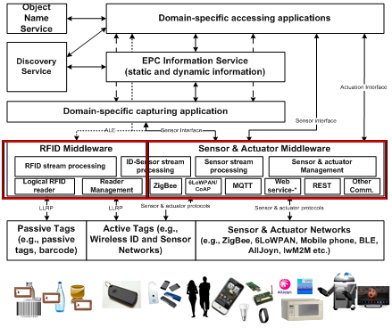

Oliot Application Level Event (Oliot-fc)
Oliot-fc is an implementation of EPCglobal application level events (ALE) interface which provides APIs for filtering and grouping radio frequency identification (RFID) based data.
Oliot-fc is forked from the Fosstrak Filtering and Collection project. The objective of this fork is to develop EPCglobal-architecture-based IoT platform under the vision of Auto-ID Lab Korea, KAIST.
[]
There are 4 projects in Oliot-fc.
- fc-client
- ALE client program for Oliot-fc. It includes Java Swing based user interface.
- fc-commons
- Oliot-fc common components such as web service components, and serializer/deserializer utilities.
- fc-server
- A main server project of Oliot-fc. Its role includes processing requests from ALE clients, accepting reader connections, generating reports and so on.
- fc-webclient
- ALE web based client program for Oliot-fc. The compiled binaries can be embedded to the servlet container Tomcat, and they can be access by web browser.